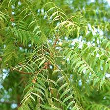
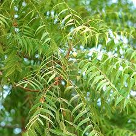

Price: 50 Rs./- potted plant
Botanical Name : Azadirachta indica
INTERESTING FACT -
- Neem trees can live for up to 200 years ,The first recorded indication that neem was being used in the medical treatment was about 4 500 years ago
Neem is thought to have originated in Assam and Burma (where it is common throughout the central dry zone and the Siwalik hills). However, the exact origin is uncertain: some say neem is native to the whole Indian subcontinent; others attribute it to dry forest areas throughout all of South and Southeast Asia, including Pakistan, Sri Lanka, Thailand, Malaysia, and Indonesia.
Medicinal properties :
– All parts of the neem tree-leaves, flowers, seeds, fruits, roots and bark have been used traditionally for the treatment of:
– All parts of the neem tree-leaves, flowers, seeds, fruits, roots and bark have been used traditionally for the treatment of:
- Inflammation
- infections
- fever
- skin diseases
- dental disorders
How to grow:
- The pulp from the fruit can be removed by rubbing it against a coarse surface when it is wet
- Wash the seeds and sow them as early as possible
- Cover them with an inch of the potting mix and keep the pot warm and wet. It takes 1-3 weeks for them to germinate.
- If you find it easier to start with a plant, put it in a large container with a drainage hole and add in a good potting mix.
- Give your neem tree lots of indirect sunlight at first. However, you should avoid prolonged periods in the sun until your tree shows signs of new growth.
Active Comp :
azadirachtin, nimbolinin, nimbin, nimbidin, nimbidol, salannin, and quercetin.
azadirachtin, nimbolinin, nimbin, nimbidin, nimbidol, salannin, and quercetin.